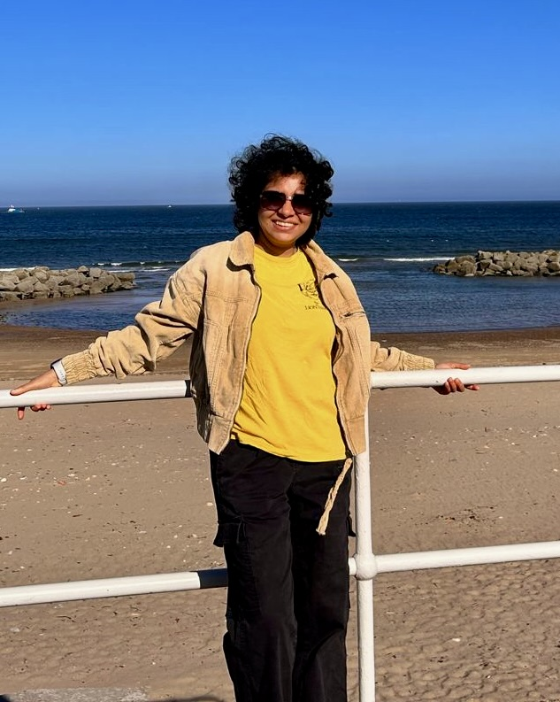
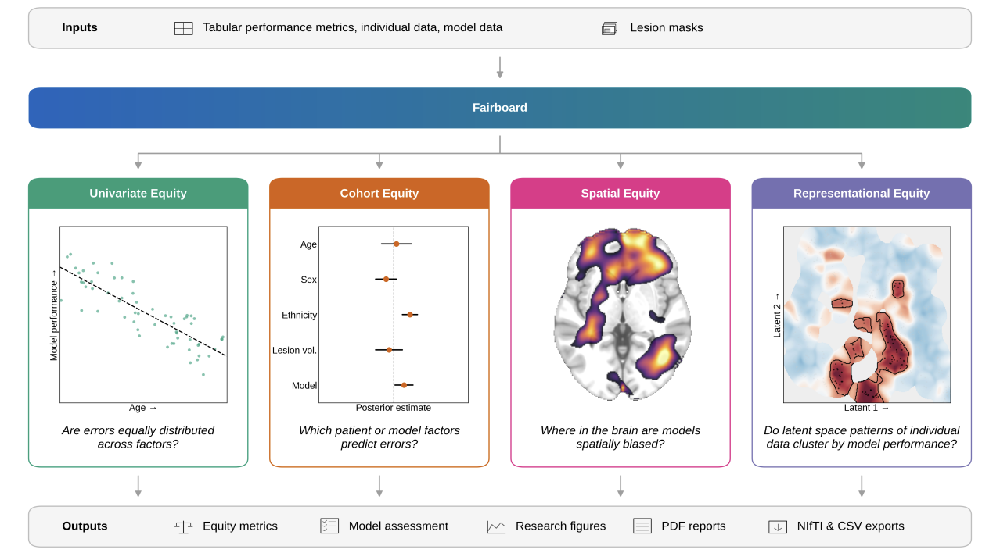
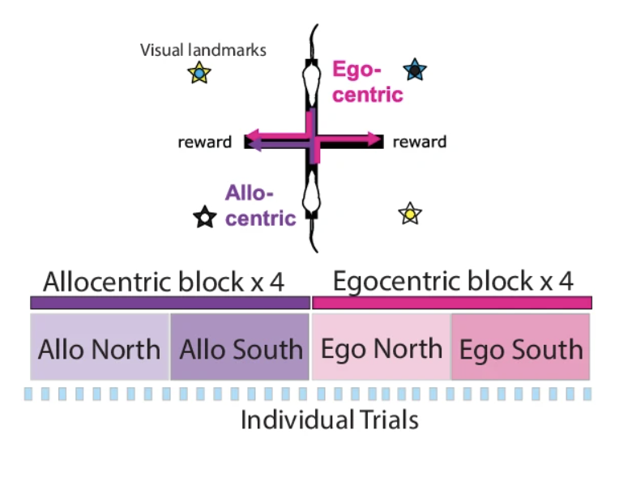
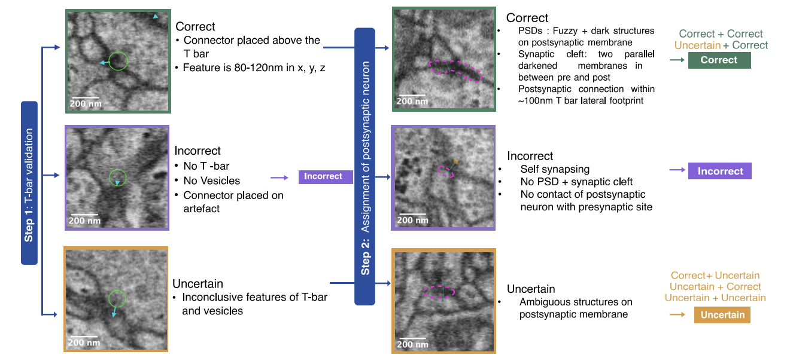
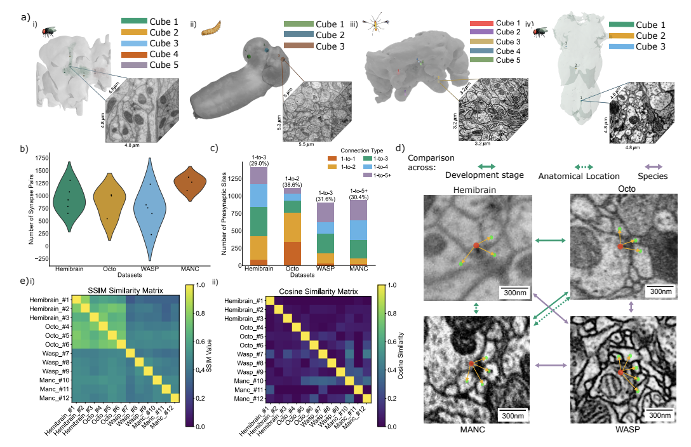
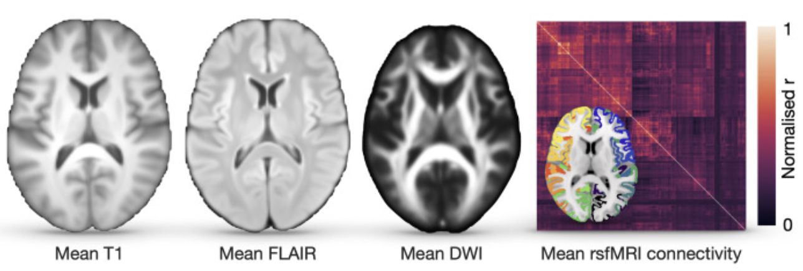
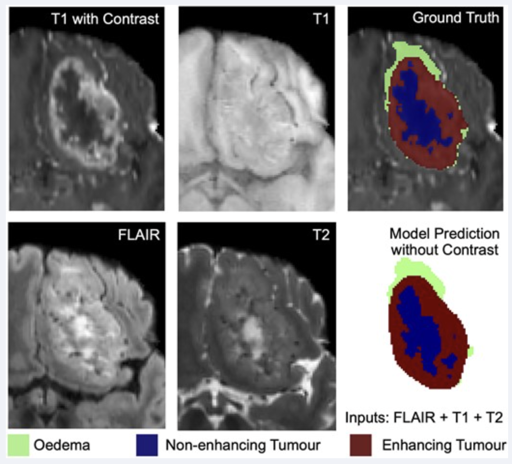
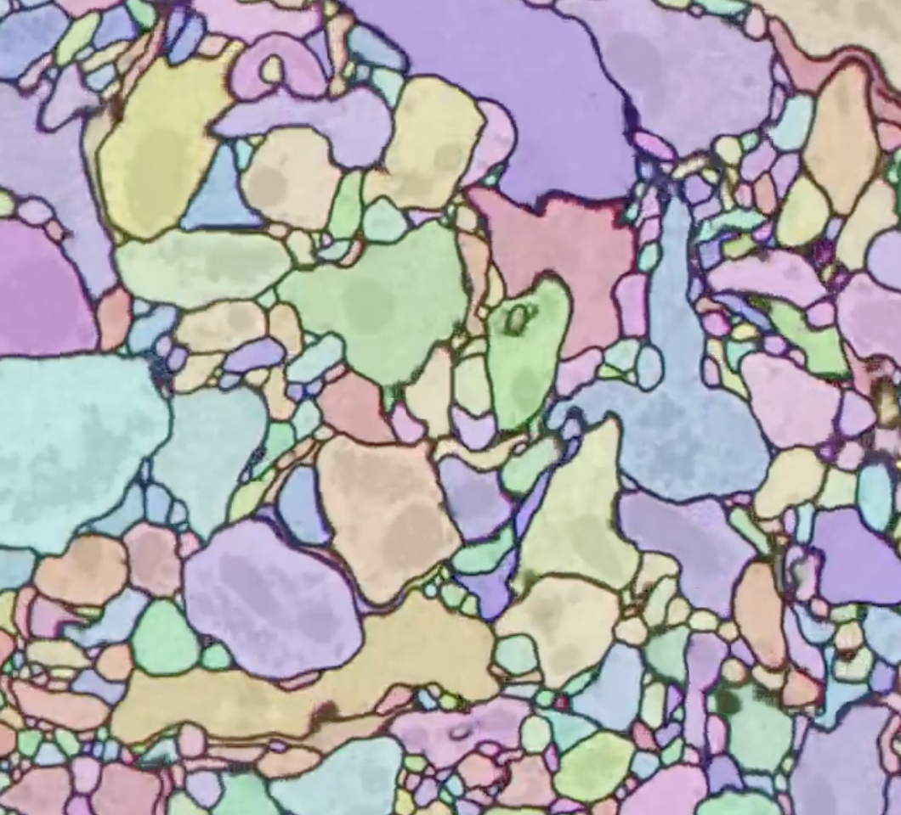

|
Samia Mohinta I'm a Data Scientist at the University of Cambridge in Albert Cardona's lab, where I develop AI methods and scientific software for mapping connections between neurons in the brains of model organisms. Over the past few years, I've worked across several areas of machine learning and scientific computing, including medical imaging and clinical data in Parashkev Nachev's High Dimensional Neurology Lab at UCL, and on reinforcement learning with Rui Ponte Costa's Neural & Machine Learning group at the University of Bristol/Oxford. I also had a short stint working on neuromorphic robotics at Bristol Robotics Laboratory. Outside academia, I worked as a Senior Systems Engineer at Infosys, engineering data-driven business intelligence workflows for Apple, and later as Vice President – Innovation at a London-based startup, where I led the development of an NLP-driven recommendation system. Across these different settings, I've developed a particular interest in building computational workflows that are scalable, reproducible, and useful beyond a single experiment or dataset. I'm always happy to discuss potential collaborations and consulting opportunities. Feel free to get in touch by email. Email / CV (intermittently updated) / Publications / Conferences / Videos / Awards / Service |
 |
Current Research InterestsAI for Neuroscience & Biomedicine · Reinforcement Learning · Open & Reproducible ML Systems |
What's New
|
PublicationsFor the maintained publication record, please see my Google Scholar. |
|
 |
Fairboard: a quantitative framework for equity assessment of healthcare models
James K. Ruffle, Samia Mohinta, Chris Foulon, Mohamad Zeina, Zicheng Wang, Sebastian Brandner, Harpreet Hyare, Parashkev Nachev arXiv:2604.09656, 2026 |
|
 |
Hippocampus supports multi-task reinforcement learning under partial observability
Dabal Pedamonti*, Samia Mohinta*, Martin V. Dimitrov, Hugo Malagon-Vina, Stephane Ciocchi, Rui Ponte Costa Nature Communications, 16, 9619, 2025 *Equal contribution |
|
 |
Beyond Agreement: Standardizing Crowdsourced Synapse Annotations through Proofreading in EM Connectomics
Shi Yan Lee, Ana Correia, Nicolo Ceffa, Miranda Robbins, Daniel Franco-Barranco, Marta Zlatic, Albert Cardona, Samia Mohinta bioRxiv, 2025 |
|
 |
Towards Generalized Synapse Detection Across Invertebrate Species
Samia Mohinta, Daniel Franco-Barranco, Shi Yan Lee, Albert Cardona arXiv:2509.17041, 2025 |
|
 |
Computational limits to the legibility of the imaged human brain
James K. Ruffle, Robert J. Gray, Samia Mohinta, Guilherme Pombo, Chaitanya Kaul, Harpreet Hyare, Geraint Rees, Parashkev Nachev NeuroImage, 2024 |
|
 |
Brain tumour segmentation with incomplete imaging data
James K. Ruffle, Samia Mohinta, Robert J. Gray, Harpreet Hyare, Parashkev Nachev Brain Communications, 2023 |
Conference & Workshop Activity
|
Videos & FeaturesSelected interviews and public features about my work. |
 |
Samia Mohinta ThinkLab Hackathon Interview
Cambridge ThinkLab interview. video |
 |
Computer Vision in Neuroscience - Dr Samia Mohinta
Interview with Accelerate Science. video / LinkedIn post |
|
 |
Using AI to map circuitry across entire brains
Public feature about AI for connectomics. feature |
Honors & Awards
|
Service
|
HobbiesTravelling, blogging about moving from India to the UK and student life, and trying new cuisines. |